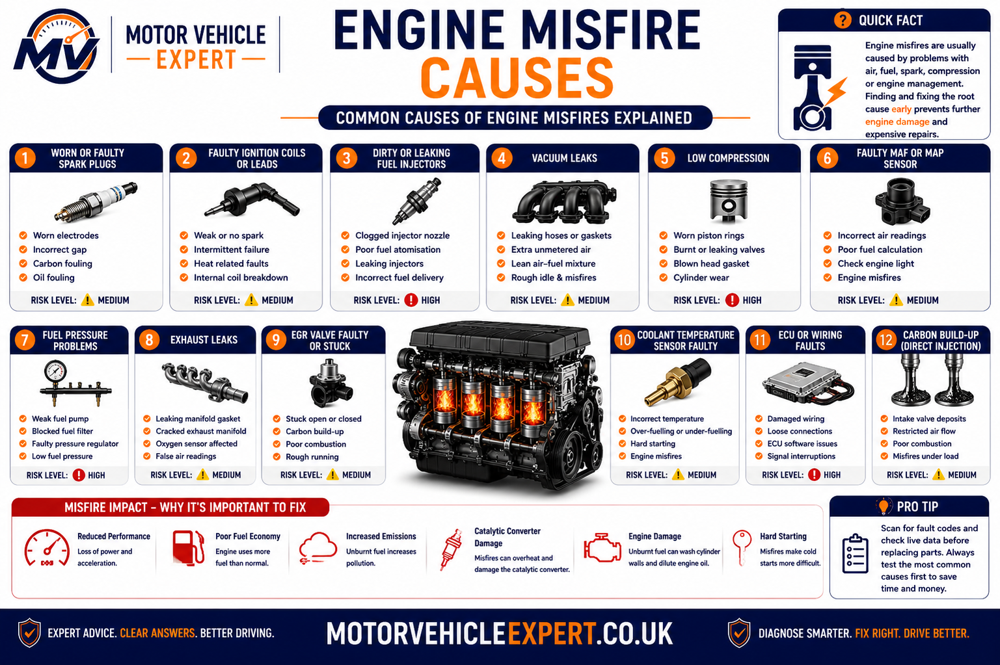
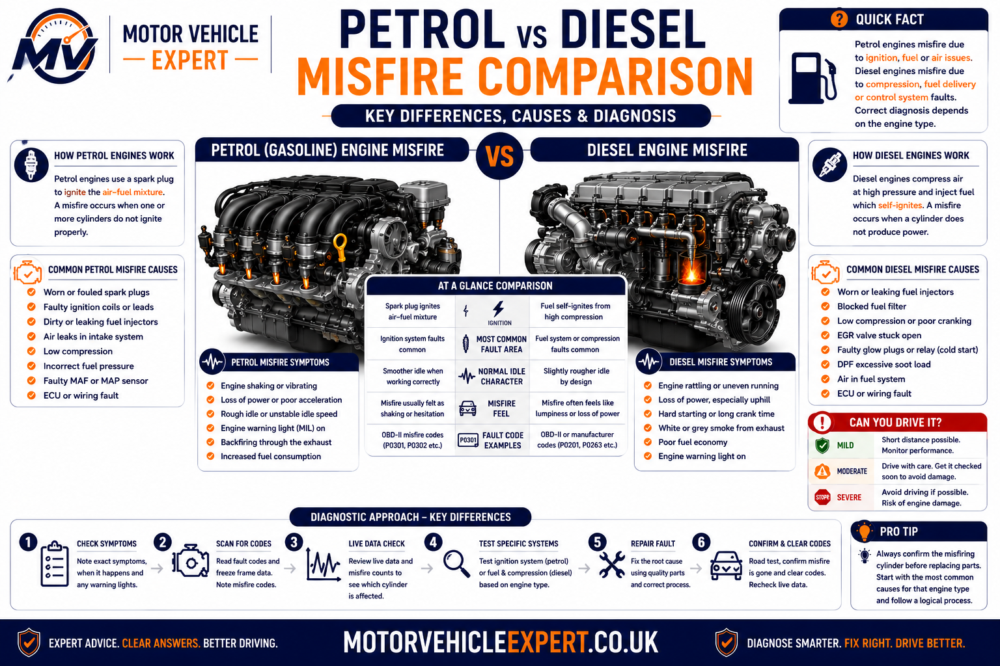
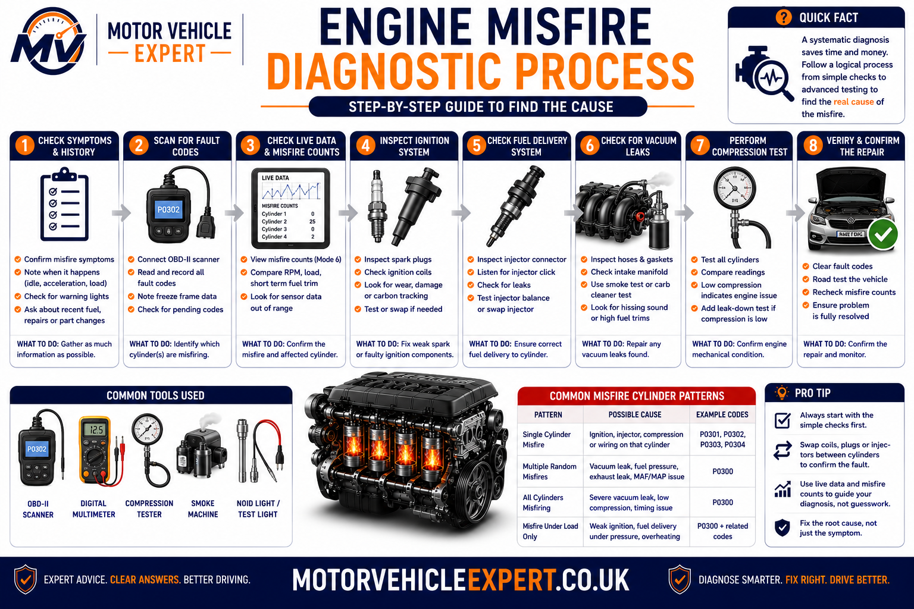
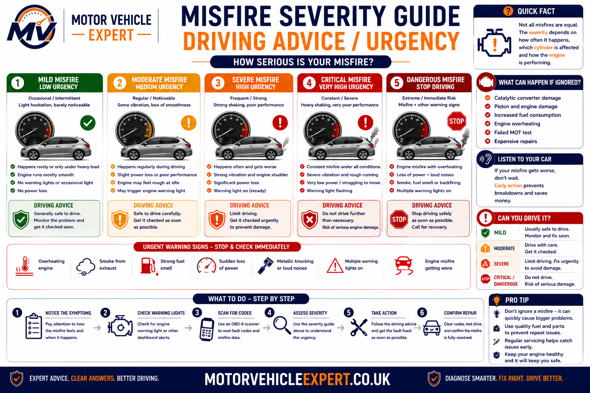
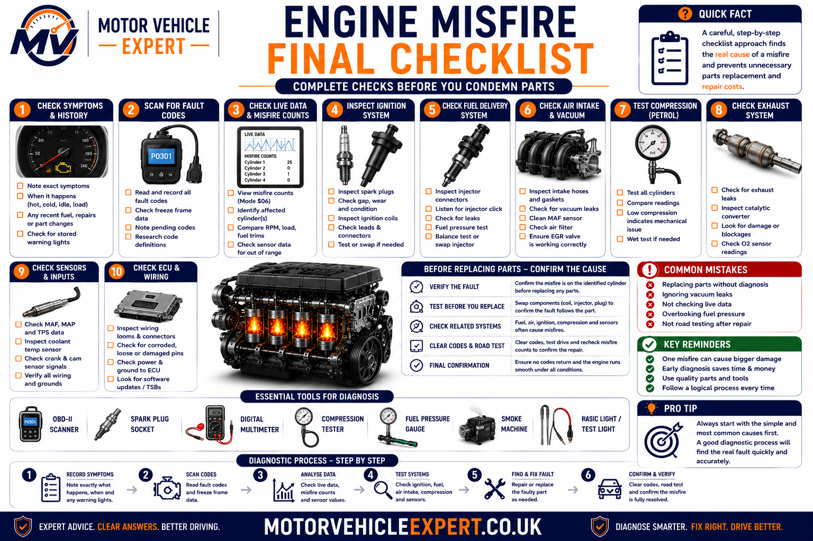

What Are the Main Signs of an Engine Misfire?
An engine misfire happens when one or more cylinders fail to burn the air-fuel mixture correctly. The engine may feel uneven at idle, shake through the body, hesitate when accelerating, jerk under load, lose power or trigger a steady or flashing engine management light.
Petrol misfires are commonly caused by worn spark plugs, weak ignition coils, injector faults, intake leaks or low compression. Diesel misfire-like symptoms are more often connected with injector imbalance, fuel-pressure faults, glow-system problems, EGR faults, poor compression or incorrect timing.
Most Common Feeling
Shaking, stumbling or an uneven exhaust note, particularly at idle or during acceleration.
Most Common Petrol Cause
Worn spark plugs, weak ignition coils or an air-fuel mixture fault.
Most Serious Warning
A flashing engine management light with strong shaking or major power loss.
Best Next Step
Scan fault codes, preserve freeze-frame data and test the affected system before replacing parts.
A flashing engine management light can indicate that unburnt fuel is entering the exhaust. Continued driving may overheat and damage the catalytic converter, turning a spark-plug or ignition-coil fault into a much more expensive repair.
What Does an Engine Misfire Mean?
Every cylinder needs the correct amount of air and fuel, sufficient compression and accurately timed ignition or injection. A misfire occurs when combustion is weak, incomplete, mistimed or absent during one or more engine cycles.
The fault may affect one cylinder consistently, several cylinders intermittently or the whole engine under particular conditions. This is why the exact pattern—idle, cold start, acceleration, high load or warm operation—is often more useful than the word “misfire” alone.
1. Air Enters
The engine must receive a measured quantity of clean intake air. Vacuum leaks or airflow errors can disturb the mixture.
2. Fuel Is Delivered
The injector must supply the correct amount of fuel with the right spray pattern and pressure.
3. Compression Builds
Valves, piston rings, cylinder walls and timing components must allow the cylinder to seal and compress the mixture.
4. Combustion Occurs
Petrol engines need a correctly timed spark. Diesel engines rely on compression heat and accurately timed fuel injection.
A cylinder-specific misfire code confirms that the ECU detected uneven combustion on that cylinder. It does not prove that the spark plug, ignition coil or injector is automatically responsible. Air leaks, wiring, compression and mechanical timing must also be considered.
Common Engine Misfire Symptoms
Misfires do not always feel the same. A small intermittent fault may only produce a slight vibration, while a severe cylinder failure can make the vehicle shake, lose power and struggle to accelerate safely.
Rough or Lumpy Idle
The engine feels uneven while stationary, the rev counter may move slightly and the exhaust note may sound irregular.
Car vibrates at idle →Shaking or Vibration
Uneven power pulses can make the engine and vehicle body shake. Worn engine mounts may make the vibration feel worse but are not always the original cause.
Hesitation or Flat Spots
The vehicle may pause, stumble or respond slowly when the accelerator is pressed because one or more cylinders cannot produce normal power.
Acceleration hesitation guide →Jerking During Acceleration
Weak ignition or fuel delivery may become most noticeable when climbing hills, overtaking or accelerating at low engine speed.
Jerking under acceleration →Loss of Engine Power
A cylinder that is not contributing properly reduces overall engine output. The vehicle may feel sluggish, enter limp mode or struggle under load.
Power-loss guide →Engine Management Light
The light may remain steady for a stored emissions fault or flash when the ECU detects an active misfire severe enough to threaten the catalytic converter.
Engine-light guide →Fuel Smell or Irregular Exhaust
Poor combustion can allow unburnt fuel and excess oxygen into the exhaust, producing a strong smell, popping sound or uneven exhaust pulse.
Petrol-smell guide →Hard Starting
Injector leakage, weak ignition, low compression or incorrect sensor readings may cause extended cranking or uneven running immediately after startup.
Cranks but will not start →Poor Fuel Economy
Incomplete combustion and ECU fuel corrections can increase fuel use, exhaust emissions and catalytic-converter temperature.
Some ignition and fuel faults appear only when cylinder pressure rises under acceleration. A vehicle may idle normally but misfire badly during overtaking, climbing hills or accelerating in a high gear.
When the Misfire Happens Gives Important Clues
Record when the fault occurs before any codes are cleared or parts are replaced. Misfires that appear only under specific conditions often point towards a smaller group of likely causes.
Misfire While Stationary
Possible causes include intake leaks, throttle deposits, ignition faults, injector imbalance, EGR flow or low compression.
Misfire During Acceleration
Worn plugs, weak coils, insufficient fuel pressure, injector faults and boost or intake leaks become more obvious as engine load rises.
Misfire Only When Cold
Cold-only faults may involve weak ignition, incorrect coolant temperature data, injector leakage, intake leaks, diesel glow faults or marginal compression.
Cold rough-idle guide →Misfire After Warming Up
Heat can expose failing ignition coils, crank or cam sensors, wiring resistance, fuel-pressure faults and internal mechanical problems.
Misfire After Rain or Washing
Moisture may enter damaged coil boots, ignition leads, plug wells or electrical connectors and disturb the high-voltage ignition path.
Misfire That Comes and Goes
Loose connectors, wiring faults, early coil failure, injector intermittency and changing temperature or load can produce a fault that is difficult to reproduce.
Record whether the engine was cold or warm, the approximate engine speed, gear, road speed, throttle position, weather conditions and warning-light behaviour. These details help the technician recreate the fault and reduce unnecessary testing.
What Causes an Engine Misfire?
Every engine misfire can usually be traced to one of four areas: ignition, fuel delivery, air supply or engine compression. Modern vehicles also rely on numerous sensors and electronic control systems, meaning an electrical fault can create the same symptoms as a mechanical problem. Proper diagnosis means confirming which system has failed before replacing parts.

⚡ Ignition Faults
Petrol engines rely on a strong spark at exactly the right moment. Weak ignition is one of the most common causes of intermittent and cylinder-specific misfires.
- Worn spark plugs
- Failing ignition coils
- Damaged HT leads
- Oil-contaminated plug wells
- Poor electrical connections
- Incorrect spark-plug gap
⛽ Fuel Delivery Faults
Every cylinder requires the correct fuel quantity at the correct pressure. Even a small injector imbalance can create rough running.
- Blocked injectors
- Leaking injectors
- Low fuel pressure
- Weak fuel pump
- Faulty pressure regulator
- Contaminated fuel
🌬 Air & Intake Problems
Incorrect airflow changes the air-fuel mixture and may produce lean combustion that causes hesitation, rough idle or intermittent misfires.
- Vacuum leaks
- Split intake hoses
- Dirty throttle body
- Faulty MAF sensor
- Boost leaks
- Restricted air filter
🔧 Mechanical Problems
When ignition and fuel systems test correctly, internal engine condition becomes the next priority.
- Low compression
- Burnt valves
- Worn piston rings
- Timing chain or belt faults
- Head gasket failure
- Camshaft wear
Electrical Faults
Damaged wiring, poor earths and failing connectors can interrupt injector or ignition operation even when the components themselves are serviceable.
Sensor Faults
Crankshaft, camshaft, coolant temperature, oxygen and airflow sensors all influence combustion. Incorrect sensor information can produce repeated misfires.
Maintenance Issues
Delayed servicing, worn plugs, dirty filters and poor-quality fuel often contribute to rough running before a permanent fault develops.
Ignition coils and spark plugs frequently cause misfires, but injector faults, intake leaks, compression loss and wiring problems can produce identical symptoms. Testing should always confirm the failed component before replacement.
How Petrol and Diesel Misfires Differ
Although both engine types can shake, hesitate and lose power, the underlying causes are often very different. Understanding those differences helps narrow the diagnosis much more quickly.

⛽ Petrol Engine Misfires
Petrol engines require a correctly timed spark. Weak ignition remains the leading cause of rough running.
- Worn spark plugs
- Faulty ignition coils
- Vacuum leaks
- Dirty throttle body
- Injector imbalance
- Fuel-pressure faults
🚛 Diesel Engine Misfires
Diesel engines depend on compression and precisely controlled fuel injection rather than spark ignition.
- Injector wear
- Glow plug faults
- Fuel rail pressure problems
- EGR faults
- Air leaks
- Compression loss
Cold Starts
Petrol engines often reveal ignition weakness, while diesels may struggle because of glow plug or injector faults.
Acceleration
Both engine types may hesitate under load, although petrol engines more commonly suffer ignition breakdown at higher cylinder pressures.
Smoke Clues
Diesel injector faults frequently produce noticeable smoke, whereas petrol misfires are more likely to trigger fuel smells and catalytic converter overheating.
Typical Diagnosis
Petrol diagnosis starts with ignition testing. Diesel diagnosis normally begins with injector balance, rail pressure and compression checks.
Two vehicles may shake in exactly the same way while requiring completely different repairs. Identifying whether the engine is petrol or diesel helps technicians prioritise the correct tests before any components are replaced.
How a Professional Garage Diagnoses an Engine Misfire
Professional diagnosis follows a logical sequence rather than replacing parts based on guesswork. Modern vehicles record valuable fault-code, freeze-frame and live-data information that should always be examined before components are removed.

1. Confirm The Complaint
Identify exactly when the misfire occurs—cold, hot, idle, acceleration, high load or continuously.
2. Scan Fault Codes
Read stored, pending and manufacturer-specific fault codes before clearing anything.
3. Review Freeze Frame Data
Freeze-frame information shows the engine speed, load and operating conditions present when the ECU detected the misfire.
4. Check Live Data
Monitor fuel trims, oxygen sensors, airflow, coolant temperature and misfire counters while the engine is running.
5. Test The Suspected System
Inspect ignition, fuel pressure, injectors, intake leaks and electrical circuits before replacing components.
6. Verify The Repair
Repeat the original driving conditions to confirm the fault has been completely eliminated.
Many expensive repairs begin because ignition coils, injectors or sensors are replaced without confirming the fault. A structured diagnostic process normally costs less than replacing several good components.
How Serious Is An Engine Misfire?
Not every misfire requires the vehicle to stop immediately, but severe misfires should never be ignored because continued driving can damage the catalytic converter and increase repair costs dramatically.

Monitor Soon
Minor intermittent hesitation with no warning lights and no noticeable power loss.
Arrange Diagnosis
Persistent rough idle, reduced performance or an illuminated engine management light.
Stop Driving
Flashing engine light, severe shaking, repeated stalling or major power loss.
A flashing warning light usually means the catalytic converter is at risk of overheating because unburnt fuel is entering the exhaust system. Continuing to drive may increase repair costs significantly.
Can You Drive With An Engine Misfire?
Whether you should continue driving depends on how severe the misfire is. Minor intermittent faults may allow careful driving to a repair facility, whereas severe misfires should be treated as potentially damaging.
Usually Safe For A Short Journey
- Very slight roughness
- No flashing warning light
- No smoke
- No overheating
- Stable oil pressure
Book A Garage Soon
- Persistent rough idle
- Reduced fuel economy
- Steady engine light
- Repeated hesitation
- Loss of performance
Stop Driving
- Flashing engine light
- Violent shaking
- Heavy smoke
- Fuel smell
- Engine repeatedly stalls
Typical UK Engine Misfire Repair Costs
Repair costs depend entirely on the cause of the misfire. Simple ignition repairs can be relatively inexpensive, while internal engine faults require significantly more labour.
Spark Plugs
£80–£220One of the most common petrol-engine repairs.
Ignition Coil
£120–£350Frequently responsible for intermittent cylinder misfires.
Fuel Injector
£180–£600+Prices vary considerably depending on engine type.
Air Intake Leak
£90–£350Split hoses or leaking intake components.
Sensor Replacement
£100–£400MAF, crankshaft, camshaft or coolant sensors.
Compression Repair
£800–£3,000+Internal engine repairs involving valves, pistons or timing components.
| Repair | Typical Cost | Usually Needed When |
|---|---|---|
| Diagnostic Scan | £60–£120 | Fault confirmation |
| Spark Plugs | £80–£220 | Routine wear |
| Ignition Coil | £120–£350 | Weak spark |
| Fuel Injector | £180–£600+ | Poor fuel delivery |
| Compression Repair | £800–£3,000+ | Mechanical damage |
Should You Repair It Immediately Or Monitor It?
Monitor Briefly
A single brief hesitation with no warning lights may simply require observation while arranging diagnosis.
Repair Immediately
Persistent shaking, flashing warning lights or repeated misfires should be repaired as soon as possible to prevent additional damage.
Replacing spark plugs today may cost a fraction of replacing a damaged catalytic converter or repairing internal engine damage later.
Should You Buy A Used Car With A Misfire?
A confirmed ignition fault may represent a relatively inexpensive repair, but an unknown misfire should always be treated as a negotiation point until the true cause has been professionally diagnosed.
Usually Acceptable
Confirmed spark-plug replacement with supporting service history.
Proceed Carefully
Injector faults, intake leaks or electrical problems requiring further diagnosis.
Walk Away
Heavy knocking, low compression, flashing warning lights or severe mechanical noise.
Engine Misfire Inspection Checklist
Work through this checklist before replacing parts or approving an expensive repair. The exact misfire pattern, warning-light behaviour, fault-code evidence and test results should all support the final diagnosis.

Information to Record Before Diagnosis
- Note whether the engine is cold or fully warm.
- Record whether the fault occurs at idle or under acceleration.
- Check whether the engine management light is steady or flashing.
- Listen for knocking, popping or an uneven exhaust note.
- Notice any petrol, diesel, oil or coolant smell.
- Check whether smoke appears from the exhaust.
- Record whether the vehicle loses power or enters limp mode.
- Check recent servicing and repair history.
Tests That Should Support the Repair
- Read stored, pending and permanent fault codes.
- Preserve and review freeze-frame data.
- Check cylinder-specific misfire counters.
- Inspect spark plugs, coils and ignition wiring.
- Test intake hoses and manifold seals for air leaks.
- Check fuel pressure and injector operation.
- Test battery voltage, earths and charging performance.
- Carry out compression or timing tests where required.
Prove the Fault
A fault code should guide testing, not automatically decide which component is replaced.
Repeat the Original Conditions
Verify the repair at the same temperature, load, speed and operating conditions that originally caused the misfire.
Recheck Warning Lights
Confirm that the engine light remains off, the misfire counters remain stable and no new faults return.
A repair is not complete simply because the engine runs smoothly in the workshop. The vehicle should be tested under the conditions that originally produced the fault, and fault memory should be checked again before the repair is considered successful.
Continue Your Engine Misfire Diagnosis
Engine misfires can overlap with rough cold idle, acceleration hesitation, warning lights, fault codes, smoke, fuel smells and power loss. Use these related Motor Vehicle Expert guides to investigate the symptom or diagnostic evidence that most closely matches your vehicle.
Car Rough Idle When Cold
Diagnose shaking, hunting, stalling and misfires that appear during the first few minutes after startup.
Read Cold-Idle GuideCar Vibrates at Idle
Separate combustion faults from worn engine mounts, drivetrain vibration and other causes of shaking while stationary.
Read Idle-Vibration GuideEngine Management Light Guide
Understand steady and flashing warning lights, common causes, driving risk and the correct diagnostic process.
Read Engine-Light GuideFlashing Engine Light Then Stops
Learn why the warning light may flash during a severe misfire and then disappear when the fault becomes less active.
Read Flashing-Light GuideCar Hesitates When Accelerating
Investigate flat spots, delayed response and load-related misfires caused by ignition, fuel, airflow or boost faults.
Read Hesitation GuideCar Losing Power When Accelerating
Compare misfires with fuel-pressure, turbocharger, airflow, exhaust restriction and limp-mode problems.
Read Power-Loss GuideP0300 Random Misfire Code
Understand random or multiple-cylinder misfires, likely causes, diagnosis and repair priorities.
Read P0300 GuideP0301 Cylinder 1 Misfire
Follow a cylinder-specific diagnosis covering spark, injector, wiring, compression and mechanical condition.
Read P0301 GuideA fault code identifies where the ECU detected abnormal combustion, but the driving pattern helps explain why it happened. Combine the code with whether the fault occurs cold, hot, at idle, under acceleration or during heavy load.
Engine Misfire Questions Answered
These answers cover the most common questions UK drivers ask about engine misfire symptoms, causes, warning lights, petrol and diesel faults, diagnosis, repair costs and driving safety.
What are the main symptoms of an engine misfire?
Common engine misfire symptoms include rough idle, shaking, hesitation, jerking, loss of power, an uneven exhaust note, poor fuel economy, hard starting, fuel smell and a steady or flashing engine management light.
What does an engine misfire feel like?
A misfire may feel like the engine is missing a beat, shaking through the body, stumbling when accelerating or producing uneven power. A severe fault can make the vehicle jerk or struggle to accelerate safely.
What causes an engine misfire?
Common causes include worn spark plugs, weak ignition coils, injector faults, low fuel pressure, intake leaks, sensor or wiring faults, EGR problems, incorrect timing and low cylinder compression.
Can bad spark plugs cause an engine misfire?
Yes. Worn, fouled or incorrectly gapped spark plugs can produce a weak spark and cause rough idle, hesitation or a cylinder-specific misfire, particularly under acceleration.
Can a faulty ignition coil cause a misfire?
Yes. A weak ignition coil may fail intermittently or break down when cylinder pressure rises under load. The fault may affect one cylinder and trigger a P0301, P0302, P0303 or P0304 code.
Can a fuel injector cause an engine misfire?
Yes. A restricted injector may deliver too little fuel, while a leaking injector may over-fuel the cylinder. Injector wiring and fuel pressure faults can create similar symptoms.
Can an air or vacuum leak cause a misfire?
Yes. Unmetered air entering through split hoses, breather circuits or manifold seals can make the mixture too lean and cause rough idle, hesitation or multiple-cylinder misfires.
Can low compression cause a persistent misfire?
Yes. Burnt valves, worn piston rings, head-gasket damage, incorrect valve timing or other mechanical faults can reduce cylinder compression and cause a misfire that does not respond to ignition or injector replacement.
Why does my car misfire only when accelerating?
Misfires under acceleration are commonly caused by weak ignition coils, worn spark plugs, low fuel pressure, injector problems, boost leaks or mixture faults that become more noticeable as engine load rises.
Why does my car misfire only when cold?
Cold-only misfires may involve weak ignition, incorrect coolant temperature readings, intake leaks, injector leakage, diesel glow faults or marginal compression that improves as the engine warms.
Why does an engine misfire when hot?
Heat can expose deteriorating ignition coils, crankshaft or camshaft sensors, wiring resistance, fuel-pressure problems and mechanical faults that are less noticeable when the engine is cold.
Can a weak battery cause misfire symptoms?
Low voltage can affect cranking speed, ignition strength, injector operation and control-module performance. Battery, charging and earth circuits should be tested when electrical supply is questionable.
Is a flashing engine management light serious?
Yes. A flashing engine management light commonly indicates an active misfire that may send unburnt fuel into the exhaust and overheat the catalytic converter.
Can an engine misfire damage the catalytic converter?
Yes. Unburnt fuel can ignite inside the catalytic converter and cause severe overheating. Continuing to drive with a strong active misfire can turn a relatively simple ignition fault into an expensive exhaust repair.
Can I drive with a minor engine misfire?
A very mild intermittent fault with no flashing warning light, smoke, major power loss or severe shaking may allow careful short-term driving while diagnosis is arranged. Persistent symptoms should not be ignored.
When should I stop driving with a misfire?
Stop driving if the engine light flashes, the vehicle shakes violently, power drops sharply, smoke is heavy, raw fuel can be smelled, the engine overheats or it repeatedly stalls.
What do P0300 and P0301 misfire codes mean?
P0300 means the ECU detected random or multiple-cylinder misfires. P0301 means a misfire was detected on cylinder 1. The code identifies the affected combustion pattern, not automatically the failed part.
Should a garage replace the ignition coil from the fault code alone?
No. The garage should confirm the fault using misfire counters, ignition testing, component swapping where appropriate, wiring checks, injector testing and compression evidence before replacing parts.
How does a garage diagnose an engine misfire?
A garage should confirm when the fault occurs, scan codes, review freeze-frame data, inspect live misfire counts and then test ignition, intake air, fuel delivery, wiring, compression and timing as required.
Can a full service fix an engine misfire?
A service may help when worn spark plugs, restricted filters or neglected maintenance are responsible. It will not repair every injector, sensor, wiring, intake or compression fault.
How much does an engine misfire cost to repair in the UK?
A diagnostic scan may cost around £60–£120. Spark plugs may cost around £80–£220, an ignition coil around £120–£350 and injector work around £180–£600 or more. Internal engine repairs can exceed £800 and may run into several thousand pounds.
Can petrol and diesel engines both misfire?
Yes. Petrol engines commonly suffer spark, coil, injector and intake faults. Diesel engines can run unevenly because of injector imbalance, fuel-pressure problems, glow-system faults, EGR issues, compression loss or incorrect timing.
Should I buy a used car with an engine misfire?
Only consider the vehicle after the fault has been professionally diagnosed and the repair cost is known. Avoid cars with flashing warning lights, heavy smoke, mechanical knocking, low compression or sellers who dismiss the fault without evidence.
How do I know the misfire repair has worked?
The repair should be verified under the same conditions that originally caused the fault. Misfire counters should remain stable, warning lights should stay off and no stored or pending fault should return.